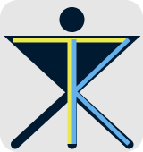

Hi there! I'm Kara Terry, a...
typing graphic |
I specialize in WCAG 2.2 and ATAG standards and enjoy making engaging, beautiful content that is also accessible. My skills include HTML, CSS, and Figma and I have been working in and around accessibility since 2018.


karajterry@gmail.com